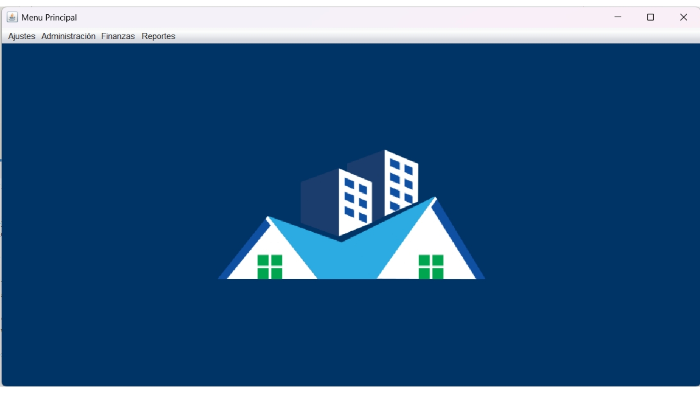
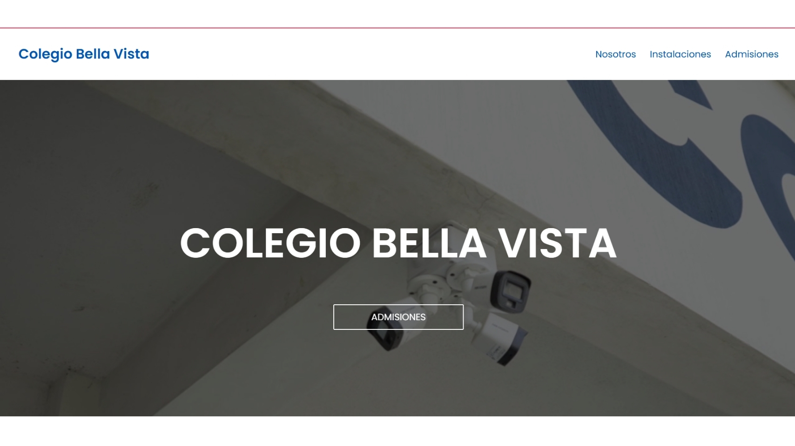
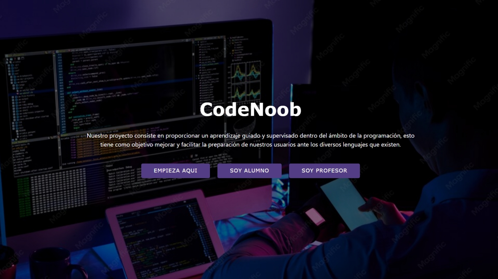
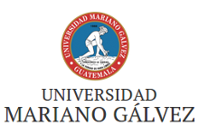

Christian Blanco
"Desarrollador de software junior"
Apasionado por el desarrollo de software y el aprendizaje constante. Me gusta crear soluciones útiles y que tengan un buen diseño.
Sobre mi
Soy un estudiante de Ingeniería en Sistemas con formación como Perito en Informática y una gran pasión por la tecnología. Me gusta aprender constantemente y enfrentar nuevos retos que me permitan crecer como desarrollador. Disfruto trabajar en general en el desarrollo de software tanto en de aplicaciones web o de escritorio, como en el diseño de interfaces, buscando siempre crear soluciones útiles y ofrecer una buena experiencia al usuario.
Périto en informática
Estudiante de Ingeniería en Sitemas
+10 proyectos personales
Tecnologías y Herramientas
A lo largo de mi formación académica y mis proyectos personales he trabajado con diferentes tecnologías orientadas al desarrollo web y de software. Siempre estoy aprendiendo nuevas herramientas y fortaleciendo mis bases para adaptarme con facilidad a nuevos entornos y lenguajes de programación.
Lenguajes de programación
Bases de datos
Otras tecnologías
Mis proyectos
Estos son algunos de los proyectos que he desarrollado para fortalecer mis conocimientos y poner en práctica diferentes tecnologías y metodologías de desarrollo.

Gestión de condominios
Este proyecto tiene como finalidad poder llevar el control de los pagos y cobros de un condominio, así de los propietarios de cada casa.
Tecnologías usadas:
Java
JavaSwing
MySQL
ApacheNetBeans
Ver más

Colegio Bella Vista
Proyecto de página web para el Colegio Bella Vista, con la información general del colegio y galería de fotos del mismo, con funciones como formularios para el envío de correos.
Tecnologías usadas:
HTML
CSS
JavaScript
Ver más

Code Noob
Portal web para aprender las bases de la programación, con distintos lenguajes, estilo duolingo
Tecnologías usadas:
HTML
CSS
Angular
Nodejs
MongoDb
Ver más
Experiencia Laboral
A lo largo de mi trayectoria profesional he desarrollado habilidades técnicas y de comunicación trabajando en diferentes áreas, lo que me ha permitido fortalecer mi capacidad de aprendizaje, adaptación y trabajo en equipo.
&cafe (Marzo 2023 - Agosto 2024)
Barista
- Atención al cliente.
- Realización de bebidas a base de café.
- Manejo de caja
SportGym (Junio 2024 - Enero 2025)
Entrenador de pista
- Atención al cliente.
- Diseño de rutinas y planes alimenticios.
- Inducción al uso correcto de las máquinas
Colegio Bella Vista (Junio 2025 - Julio 2026)
Docente de informática
- Introducción al mundo de la programación a alumnos de carrera.
- Introducción a el entorno de office 365 a alumnos de primaria.
- Desarollo de página web del colegio.
- Automatización del laboratorio de computación.
- Creación de contenido para redes sociales.
Formación académica
Mi formación académica ha estado enfocada en la informática, el desarrollo de software, sin embargo siempre me ha interesado aprender de todo y la mejora continua, complementando mis estudios con proyectos personales y aprendizaje autodidacta.

Centro Técnico y Laboral Kinal (Enero 2017 - Octubre 2022)
Périto en informática
Universidad Galileo (Enero 2023 - Noviembre 2024)
Administración de Centros Fitness y entrenamiento personal.

Universidad Mariano Galvez (Enero 2025 - Actualidad)
Ingeniería en sistemas
Preguntas frecuentes
¿Cuentas con certificaciones adicionales?
Sí, tengo varios diplomas, puedes verlos más a detalle haciendo clic en el siguiente enlace: diplomas
¿Por qué contratarme a mí?
Me caracterizo por aprender con rapidez, asumir nuevos retos y buscar siempre la mejor solución para cada problema. Disfruto desarrollar proyectos que me permitan seguir creciendo profesionalmente y aportar valor al equipo. Creo que la constancia, la responsabilidad y las ganas de mejorar cada día son algunas de mis mayores fortalezas. Mi objetivo es integrarme a un equipo donde pueda seguir aprendiendo y contribuir al desarrollo de soluciones de calidad
¿Cuáles son tus hobbies?
El deporte en general, especialmente el fútbol y gimnasio, también me gusta hacer diseños y crear contenido para redes sociales en mis tiempos libres
¿Con qué tecnologías disfrutas trabajar?
En el apartado back-end me siento más cómodo trabajando con java, pero c# y el entorno .NET me parecen excepcionales, para el desarrollo front-end aparte del stack común, el framework que más conozco es Angular.
¿Qué estás aprendiendo actualmente?
Actualmente continúo fortaleciendo mis conocimientos en .NET, Angular y desarrollo Full Stack mediante proyectos personales y práctica constante, además de el diseño UI/UX.
Contacto
Gracias por visitar mi portafolio, estoy abierto a oportunidades como Desarrollador Frontend o Desarrollador de Software Junior. Si crees que mi perfil puede aportar valor a tu equipo, estaré encantado de conversar contigo.